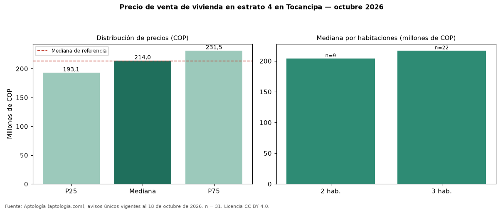

Precio de venta de vivienda en estrato 4 en Tocancipa — octubre 2026
COP 214 millones es la mediana de venta de vivienda en estrato 4 en Tocancipa, según 31 avisos únicos. Es prácticamente la misma mediana de toda la oferta de venta en Tocancipa (COP 213 millones). Por metro cuadrado, la mediana es COP 3.803.571/m² (+1 % frente a COP 3.758.065/m²), puesto 5 de 7 ciudades comparables. Por habitaciones: 2 habitaciones, COP 204 millones (n = 9); 3 habitaciones, COP 217 millones (n = 22). El área mediana es 57 m² (referencia: 58 m²). El 13 % de los avisos tiene al menos un parqueadero. La antigüedad mediana declarada es de 5 años. Datos abiertos CC BY 4.0 de Aptología; fuente y búsqueda de inmuebles: https://www.aptologia.com/venta/tocancipa. Archivos: PDF de 2 páginas, CSV con las cifras y gráfica PNG.

| Avisos únicos | 31 |
|---|---|
| Percentil 25 | COP 193.125.000 |
| Mediana | COP 214.000.000 |
| Percentil 75 | COP 231.500.000 |
| Mediana por m² | COP 3.803.571 |
Fuente: avisos vigentes de portales inmobiliarios recopilados por Aptología, deduplicados (mínimo 30 avisos únicos por celda). Precios pedidos, no cerrados. Fecha: 2026-10-18.